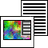

Steghide
Dieser Artikel wurde für die folgenden Ubuntu-Versionen getestet:
Ubuntu 16.04 Xenial Xerus
Ubuntu 14.04 Trusty Tahr
Zum Verständnis dieses Artikels sind folgende Seiten hilfreich:

Steghide  ist ein Steganographie-Programm, mit dem sich Daten bzw. Dateien in anderen Dateien "verstecken" lassen und somit unbemerkt transportiert werden können. Als "Trägerdatei" sind dabei die Formate .bmp, .jpg, .wav und .au möglich. In Dateien dieser Typen können mit Hilfe von Steghide beliebige andere Dateien bzw. Dateitypen versteckt werden. Eine andere mögliche Anwendung von Steghide ist das Einfügen eines unsichtbaren "Wasserzeichens" in Bilder, einfach indem man einen kurzen Text im Bild versteckt. Über diesen Text ist das Bild dann identifizierbar.
ist ein Steganographie-Programm, mit dem sich Daten bzw. Dateien in anderen Dateien "verstecken" lassen und somit unbemerkt transportiert werden können. Als "Trägerdatei" sind dabei die Formate .bmp, .jpg, .wav und .au möglich. In Dateien dieser Typen können mit Hilfe von Steghide beliebige andere Dateien bzw. Dateitypen versteckt werden. Eine andere mögliche Anwendung von Steghide ist das Einfügen eines unsichtbaren "Wasserzeichens" in Bilder, einfach indem man einen kurzen Text im Bild versteckt. Über diesen Text ist das Bild dann identifizierbar.
Installation¶
Steghide wird über folgendes Paket installiert [1]:
steghide (universe)
 mit apturl
mit apturl
Paketliste zum Kopieren:
sudo apt-get install steghide
sudo aptitude install steghide
Benutzung¶
Steghide funktioniert nach folgendem Prinzip: Eine Datei wird komprimiert, verschlüsselt und anschließend in einer Trägerdatei versteckt. Zum Entpacken der Trägerdatei benötigt man ebenfalls Steghide sowie ein Passwort, welches beim Verstecken einer Datei in der Trägerdatei festgelegt wird. Details zur Funktionsweise sind den Manpages zu Steghide enthalten.
Die Benutzung von Steghide erfolgt vollständig über den Terminal [2]. Die allgemeine Syntax von Steghide lautet:
steghide [Kommando] <Option(en)>
Bei Steghide ist Pflicht, dass das Kommando vor den Optionen steht, diese können dafür in beliebiger Reihenfolge benutzt werden.
Steghide kennt folgende Kommandos:
| Kommandos von Steghide | |
| Kommando | Beschreibung |
embed | Es sollten Daten in einer Datei versteckt werden. |
extract | Es sollten Daten aus einer Datei extrahiert werden. |
info | Information zur Trägerdatei ausgeben (z.B. maximal mögliche Größe der zu versteckenden Datei bei "neuen" Trägern oder Informationen zur versteckten Datei, sofern es sich um einen "benutzten" Träger handelt). |
encinfo | Auflistung aller möglichen Verschlüsselungsalgorithmen. |
Zum Verstecken einer Datei kennt Steghide folgende Optionen:
| Optionen zum Verstecken einer Datei | |
| Option | Beschreibung |
-ef Name | Die Datei "Name" soll versteckt werden. Der Dateiname wird dabei erhalten. Gibt man keine Datei an, liest Steghide von der Standardeingabe. |
-cf Träger | Die Datei "Träger" wird als Trägerdatei ausgewählt. |
-sf Ziel | Es wird aus der zu versteckenden Datei und Trägerdatei die Datei "Ziel" erzeugt. Wird diese Option nicht angegeben, so wird die Original-Trägerdatei überschrieben. |
-e Algo Modus | Es wird der Verschlüsselungsalgorithmus "Algo" im Verschlüsselungsmodus "Modus" genutzt. Voreinstellung ist rijndael-128 (AES) im cbc-Modus. Möchte man die Daten nicht verschlüsseln, so wählt man also Algorithmus "none" und gibt keinen Modus an. |
Zum Entschlüsseln einer Datei stehen folgende Optionen zur Verfügung:
| Optionen zum Entschlüsseln einer Datei | |
| Option | Beschreibung |
-sf Name | Die Datei "Name" soll entschlüsselt werden. |
-xf Ziel | Die Daten werden in der Datei "Ziel" gespeichert. Wird diese Option nicht angegeben, wird der Original Dateiname verwendet. |
Einige weitere Optionen sind in den Manpages zu Steghide aufgeführt.
Beispiel¶
Als erstes wird geprüft, wie viele Daten in der Datei bild.jpg versteckt werden können:
steghide info bild.jpg
Folgende Ausgabe
"bild.jpg": Format: jpeg Kapazität: 117,0 Byte Soll versucht werden, Information über eingebettete Daten anzuzeigen ? (j/n) n
sagt, dass man max. 117 Bytes an Daten unterbringen kann (Anm.: Die Datei bild.jpg ist nur 2,2 kB groß).
Jetzt wird die Datei (Daten) angelegt, die versteckt werden sollen.
echo "Geheimtext" > text.txt
Natürlich kann man hier auch jede andere beliebige, schon existierende Datei nehmen, sofern diese nicht zu groß ist.
Dann wird die Datei text.txt in der Datei bild.jpg versteckt, die Zieldatei soll versteck.jpg heißen:
steghide embed -cf bild.jpg -ef text.txt -sf versteck.jpg
Man wird aufgefordert, ein Passwort (zweimal) einzugeben, dann wird die Datei in der anderen versteckt:
Passwort eingeben: Passwort wiederholen: Bette "text.txt" in "bild.jpg" ein... fertig Schreibe Stegodatei "versteck.jpg"... fertig
Im folgenden sollen Informationen über die die "versteck.jpg" ausgelesen werden:
steghide info versteck.jpg
Man erhält folgende Ausgabe:
"versteck.jpg":
Format: jpeg
Kapazität: 117,0 Byte
Soll versucht werden, Information über eingebettete Daten anzuzeigen ? (j/n) j
Passwort eingeben:
Eingebettete Datei "text.txt":
Größe: 11,0 Byte
verschlüsselt: rijndael-128, cbc
komprimiert: jaWie man sieht, kann man nur an die Informationen gelangen, wenn man das Passwort kennt. Eine Gegenüberstellung des Originalbildes und des Bildes mit der verschlüsselten Datei bringt in der Regel keine sichtbaren Unterschiede.
Zum Schluss soll die Datei versteck.jpg wieder entschlüsselt werden:
steghide extract -sf versteck.jpg
Passwort eingeben: Extrahierte Daten wurden nach "text.txt" geschrieben.
Man benötigt also das Passwort, dann wird die verschlüsselte Datei mit dem Originaldateinamen ins aktuelle Verzeichnis geschrieben.
Stapelverarbeitung¶
Bei hunderten von Dateien ist das Utility Steghide sehr zeitraubend, da man immer wieder den Dateinamen und das Passwort eingeben muss. Mit dem folgenden kleinen Bash-Skript kann man in alle JPEG-Bilder, die in dem Verzeichnis liegen, das selbe Wasserzeichen mit immer dem gleichen Passwort einbringen (gut zum Einbringen des Copyright).
read -p "Bitte geben Sie den Wasserzeichentext ein: " wasserzeichenvariable
echo $wasserzeichenvariable > wasserzeichen
read -p "Bitte geben Sie das Passwort ein: " wasserzeichenpasswort
ls -1 *.JPG *.jpg | while read file;
do {
steghide embed -p $wasserzeichenpasswort -cf "$file" -ef "wasserzeichen" -sf "$(basename Wasserzeichen_"$file")"
}
done
rm -f wasserzeichenBeispielbild¶
Im folgenden noch als Beispiel eines Bildes im Original (Dateityp: jpg) und zum Vergleich mit darin versteckter Datei. Die versteckte Datei hat dabei annähernd die maximal erlaubte Größe für das Bild:
| Beispielbilder | |
| Original-Bild | Bild mit versteckter Datei |
Das Bild mit versteckter Datei kann man hier  herunterladen. Das Passwort zum Entschlüsseln des Bildes ist "fast".
herunterladen. Das Passwort zum Entschlüsseln des Bildes ist "fast".
Links¶
outguess - universelles Steganographie-Werkzeug
Stegosuite
- Java-basierte Anwendung (siehe auch stegosuite)OpenStego
- weitere Java-basierte AnwendungDaten verschlüsseln
 Übersichtsartikel
Übersichtsartikel
- Erstellt mit Inyoka
-
 2004 – 2017 ubuntuusers.de • Einige Rechte vorbehalten
2004 – 2017 ubuntuusers.de • Einige Rechte vorbehalten
Lizenz • Kontakt • Datenschutz • Impressum • Serverstatus -
Serverhousing gespendet von